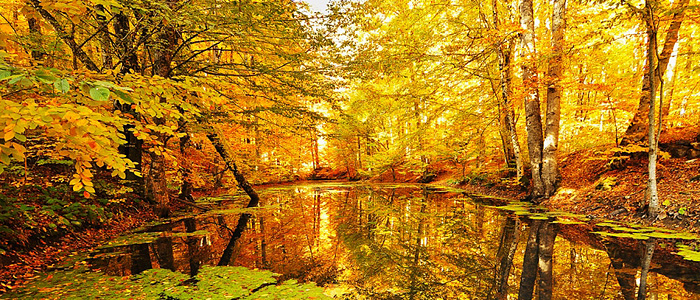
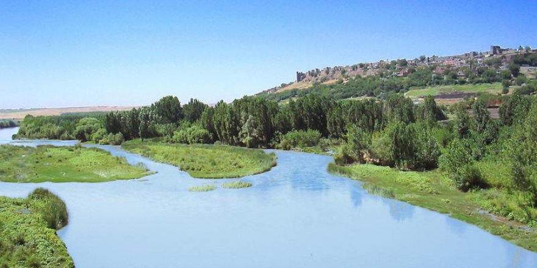

Start something that matters
Start something that matters
Stop wasting valuable time with projects that just isn't you.
Turkiye is the best.
ABOUT THE COMPANY
Key features of our company
We know design.
He is responsible for Mediterranean and Southeastern Anatolia Region
View Our Works
THE TEAM
The ones who runs this company
Onuralp Yıldız
Student & Founder
I was responsible for South Eastern Region of Turkey
Teoman Ünlü
Student & Founder
ı was responsible for the Turkish republic of nothern cyprus and the Aegean Region. "
Dina Polat
Web Designer
ı designed the web site and add the letters.
Derin Ege Evren
Student & Founder
I was responsible for Central Anatolia and Eastern Anatolia Regions of Turkey.
Emir Tuzcuoğlu
Student & Founder
I was responsible for Marmara and Blacksea region
14+
55+
89+
150+
THE AEGEAN REGION
Tourist Attractions and Symbolic Places
Anzac Cove Canakkale, Gallipoli, Turkey.
Gallipoli peninsula Canakkale, Turkey.
Ephesus Ancient City Izmir, Selcuk, Turkey.
Terrace Houses Izmir, Ephesus ancient city, Turkey.
Architectural Structures
Truva Ancient City Canakkale, Turkey.
Çeşme castle Izmir, Çeşme, Turkey
Behramkale Canakkale, Assos, Turkey.
Ayışığı Monastery Cunda Island, Turkey
Letoon Muğla, Fethiye, Turkey.
Central and Interesting Points
Temple of Athena Canakkale, Assos Turkey.
Liman Street Izmir, Selçuk, Turkey.
Kuretler Street Izmir, Selcuk, Turkey.
Clock Tower Izmir, Turkey.
Theatres
Bergama Ancient Theatre Bergama, Turkey.
Odeon Thatre Izmir, Selçuk, Turkey.
İzmir National Theatre Izmir, Turkey.
Historical Museums
Etnography Museum Izmir, Turkey.
Bodrum Castle Bodrum, Turkey.
Selçuk Efes Kent Belleği İzmir, Turkey.
Sarıkız Kazdağı Etnography Gallery Güre, Turkey.
Churches and Cathedrals
Meryem Ana Evi Izmir, Turkey.
Taksiyarhis Church Ayvalık, Turkey.
St. Jean Kilisesi Selçuk, İzmir, Turkey.
Ayios Haralambos Kilisesi Çeşme, İzmir, Turkey.
Military Museums
Gallipoli Battle Museum Gallipoli, Canakkale, Turkey.
Çanakkale Sea Museum Çanakkale, Turkey.
Military Sea Museum Çanakkale, Turkey.
Old Ruins
Zeus Altarı Adatepe Cove, Çanakkale, Turkey
Dalyan Marmaris, Turkey.
Karya Kaya Graves Marmaris, Turkey
Pınara ancient city Fethiye, Turkey
Water Formations
Köyceğiz Lake Köyceğiz, Turkey
Azmak River Akyaka, Turkey
Dalyan Lake Marmaris, Turkey
Ölüdeniz Fethiye, Turkey
Islands
Rhodes Marmaris, Turkey
Sövalye Adası Fethiye, Turkey
Sedir Island Marmaris, Turkey
Bozcaada Bozcaada, Turkey
National Parks
Saklıkent National park Fethiye, Turkey
Kuşcenneti National park Manyas, Turkey
Dilek Peninsula National park Kuşadası, Turkey
Ölü Deniz National park Kumburnu, Ölüdeniz, Turkey
Traditional Clothes
Göynek A kind of shirt which descends under the waist. It can be purple, green, yellow or white.
Cepken A kind of shirt which has no collar.
Libade Vest
Üç Etek A kind of skirt which has three parts.
Ağır Esvap Shalwar which made from velvet.
Traditional dishes:
İzmir meatballs,Tahini Pumpkin Desert,Fried Auberigne ( Kırlı ),Gypsy Rice,Çaput Dish,İzmir Syrupy Friedcake,Pastiç,Romaine Lettuce Dish,Milky Fig desert,Tekke Soup,Boyoz,Roasted Zuchhini,Wrapped Chard,Pamukkale Cake,Höşmerim,Halil İbrahim Kebab.
TURKISH REPUBLIC OF NORTHERN CYPRUS
Tourist Attractions and Symbolic Places
Othello Tower Gazimağusa, Northern Cyprus
Saint Hilarion Castle Girne, Northern Cyprus.
Girne Gateway Girne, Northern Cyprus.
Shipwreck Museum Girne, Northern Cyprus.
Barbarism Museum Lefkoşa, Northern Cyprus
Arapahmet Mosque Lefkoşa, Northern Cyprus.
Archangelos Michael Church Girne, Northern Cyprus
Mevlevi Tekke Museum Lefkoşa, Northern Cyprus
Canbulat Museum Gazimağusa, Northern Cyprus.
Aphendrika Dipkarpaz Karpasia Cyprus.
Lüzinyan House Lefkoşa, Northern Cyprus
St. Barnabas Archaelogy Museum Tuzla, Northern Cyprus.
Peace and Freedom Museum Girne, Northern Cyprus
Girne Castle Girne, Northern Cyprus
Selimiye Mosque Lefkoşa, Northern Cyprus
Lala Mustafa Paşa Mosque Gazimağusa, Northern Cyprus
Kantara Castle Kaplıca, Northern Cyprus
Bellapais Monastery Beylerbeyi, Girne, Northern Cyprus
Cape Zafer Dipkarpaz Karpasia CYPRUS
Bufavento Castle Çatalköy, Northern Cyprus
Apostolos Andreas Monastery Dipkarpaz Karpasia Cyprus
St. George Greek Church Gazimağusa, Northern Cyprus
Venedik column Lefkoşa, Northern Cyprus
St. Mamas Church Güzelyurt, Northern Cyprus
The Round Tower Girne, Northern Cyprus
Salamis Ancient City Yeni Boğaziçi, Northern Cyprus
Traditional Food
Peach Kebab
Pilavuna
Haloumi Cheese
Molehiya
Kolokas
Lalangi
Nor patty
Traditional Clothes
A black vest and a skirt for man and inside the black vest they wear white shirt.
A dress which made from velvet and they use light colours for their dresses.
SOUTHEASTERN ANATOLIA REGION
ADIYAMAN
Adıyaman castle, ulu mosque, pirin caves, kahta castle, cendere bridge,karakuş, nemrut mountain.
GAZİANTEP
Arkeoloji museum, gazi antep castle, ömeriya mosque, dülük, hisar mausoleum, yesemek open air museum, Belkıs (Zeugma), kargamış ruins, karasu river, gedikli tumulus.
ŞANLIURFA
Urfa castle, arkeoloji museum, ulu mosque, halil rahman mosque, harran, sumatar, hz İbrahim cave, hz Eyüp cave, ayn Zeliha and halilürrahman lakes, peygamber mosque, balıklıgöl.
DİYARBAKIR
Ulu mosque, Diyarbakır castle, arkeoloji museum, zinciriye moslem seminary, Malabadi bridge, behram paşa mosque, devegeçti dam, bırkıleyn cave.
MARDIN
Mardin castle, deyrulzafaran monastery, marin castle, anastasiapolis, ulu mosque, emüniddin and zinciriye moslem seminaries
BATMAN
Hasankeyf castle, dicle river, hızırbey mosque, kandil castle, rabat castle.
SIIRT
Cumhuriyet mosque, ulu mosque, Veysel karani shrine, sağlarca thermal springs, hista(taruni)
FOODS
Ali Nazik
Katmer
Hünkar Beğendi
Yuvalama
Beyran
Analı Kızlı
Kilis Kebab
İçli Köfte
Çiğ Köfte
Borani
Stuffed Lamb Ribs
LOCAL DRESSES
for women
1)Head:Kofi,Temezzi,Cheesecloth
2)Body:Kirtle,shalwar,sash,vest
3)Foot:Cotton socks and shoes
4)Trappings:Gold and silver necklace
5)Ornaments:Kohl and nose pin
6)Hair:Pigtail
for men
1)Head:Agal with black fringes
2)Body:Shirt,vest,sash,shalwar
3)Foot:Cotton socks and shoes
4)Ornaments:Köstet and pazubent
FOlk DANCES
Slow Halay
Berde
Deriko
Galüç
Hasandaglı
Lorke
Tırpano
Simsimi
Dokuzlu
Kudaro
Tırge
MARMARA REGıON
Historical Places
Istanbul Walls
Topkapı Palace
Hagia Sophia
Blue Mosque and other glass
Aynalıkavak Kasrı
Hidiv Kasrı
Dolmabahçe Palace
Anatolian Fortress
Rumeli Fortress
Yerebatan Palace
Ulucami, Green Tomb and other glasses in Bursa
Iznik walls
Iznik Hagia Sophia
Bursa-Cumalıkızık
Canakkale Abideleri
Bozoyuk - Bilecik
Sogut - Ertugrul Gazi Tomb
Religious Places
Hagia Sophia
New Mosque
Sultan Ahmet Mosque
Bursa Green Mosque
Süleymaniye Mosque
Beyazıd Mosque
Dolmabahçe Mosque
Ortaköy Mosque
Cihangir Mosque
Fethiye Mosque
Activities
Trekking
Mountaineering
Rafting
Skiing
Swimming
Antique Places
Aegospotami
Alexandria Troas
Apamea Myrlea
Apollonia
Apros
Assos
Cardia
Cebrene
Chalcedon
Cius
Drusipara
Faustinopolis
Germanicopolis
Kyzikos
Lysimachia
Nikomedia
Orestias
Sestos
Skepsis
Troya
Natural Places
Islands
Çamlıca
Belgrad Forests
Emirgan Grove
Kilyos
Polonezkoy
Şile
National Parks
Troy National Park (Canakkale)
Kazdağı National Park (Balıkesir)
Gala Lake National Park (Edirne)
Uludağ National Park (Bursa)
Manyas-Bird Paradise National Park (Balıkesir)
Kazdağı National Park
Gala Lake National Park
Museums
Borusan Contemporery
Pera Museum
Railway Museum
PTT Museum
Dolmabahçe Art Gallery
Hush Gallery
Traditional Foods
Kuyu kebabı, tas kebabı, tandır, koruk suyu, muhallebi, hünkarbeğendi, soğanlı ya da pastırmalı yumurta, tavuklu bamya and şerbetler,Zennik,Palaçinka
Local Dresses
Fes
Oyalı Çatkı
Boyun Dolağı
Kavuşturma
İçlik
Camedan
Sallama
Şal kuşak
Silahlık
Yağlık
Piştov (Kubur)
Potur
Dolama ve/veya Tozluk ve/veya Çizme
işlemeli Yün külah
Oyalı yemeni
Gömlek
Yün yelek
Folk Dances
Karşılama
Bengi
Kaşık
Çalgılı Bengili
Sword and Shield
Kasap
THE BLACK SEA REGION
Historical Places
Trabzon Atatürk Mansion
Sümela Monestary (Trabzon)
Kastamonu Clock Tower
Historic Wednesday Bridge(Samsun)
Göçceli Mosque - Historic Wooden Nailless Mosque(Samsun)
Gülbahar Hatun Tomb(Samsun)
Tirebolu Castle
Bedrama Castle
Trabzon Castle
Kaymaklı Monastery
Pasha Table
Haci Abdullah Wall
Andoz Castle
Vaselon Monastery
Religious places
Hz. Pir Şeyh Şaban-i Veli Külliyesi
Nasrullah Mosque
Activities
Trekking
Mountaineering
Safari
Rafting
Natural Places
Ballıca Cave
TONYA ERİKBELİ PLATEAU
Uzungöl
Kackar Mountains
Ayder Plateau
Gökgöl Cave
Camili
National Parks
Sahara-Karagöl National Park
Yedigöller National Park
Abant Lake
Golcuk National Park
Ulugol National Park
Karagol National Park
Ahatlar Natural Park

National Formations
Sahinkaya Canyon
Ulukaya Canyon
Valla Canyon
Museums
Bandirma Vapor Museum
Haghia Sophia Museum in Trabzon
Samsun CİTQMuzesi+
Traditional Foods
Mıhlama,Simit Tridi,Akçaabat Meatball,Pepeçura,Kuymak,Circassian Chicken,Dible Rice,Blacbean Soup,Pumpum Soup,Topik,Petaluda,Bandurma,Special Döner,Meatball,Special Pizza,Anchovy Rice,Anchovy Bread,Anchovy Soup,Kıymalı Börek
Local Dresses
For Women
1)Head: Peştemal2)Body: Underwear (şalvar),Outer wear (entari,yelek,laz kıyafeti),Foot (socks,çapula).
3)Trappings and Ornaments: For Head,For Hair, For Neck.
For Men
1)Head: Fes,Tepelik,Cover2)Body: Underwear (şalvar),Outer wear (entari,yelek,laz kıyafeti),Foot (çapula).
3)Trappings and Ornaments: Chain watch, cane, knife, tesbih.
MEDITERRANEAN
Historical Places
Aspendos Antique City (Serik, Antalya)
Phaselis Antique City (Kemer, Antalya)
Apollo Temple (Side, Antalya)
Monumental Fountain (Side, Antalya)
Religious places
Yivliminare Mosque (Kaleici, Antalya)
St. Nicholas Church (Demre, Antalya)
Activities
Hip-Notics Cable Ski (Manavgat, Antalya)
Safari
Activities
Hip-Notics Cable Ski (Manavgat, Antalya)
Safari
Antique Places
Termessos Thermal Springs (Antalya)
Patara Ruins (Gelemiş, Antalya)
Perge Antique City (Aksu, Antalya)
Side Anthique Theatre (Side, Antalya)
Kekova Sunken City (Kaş, Antalya)
Natural Places
Shivering Lake (Manavgat, Antalya)
Göynük Canyon (Kemer, Antalya)
Aynalıgöl Cave (Mersin)
Sapadere Canyon (Alanya, Antalya)
Gömbe Plateau (Kaş, Antalya)
Secret Heaven (Tarsus, Mersin)
National Parks
Bridge Canyon (Manavgat, Antalya)
Beydagları Coastal National Park (Kemer, Antalya)
Aydıncık Nature Park (Mersin)
Güllük Mountain (Antalya)
National Formations
Chimaera (Cirali, Antalya)
Bucht Von Adrasan (Adrasan, Antalya)
Kapikaya Canyon (Karaisali, Antalya)
Museums
Antalya Museum (Konyaaltı, Antalya)
Antakya Archeology Museum (Hatay)
Side Museum (Side, Antalya)
Alanya Archeology Museum (Alanya, Antalya)
Traditional Foods
Adana Antalya Burdur Hatay Isparta Mersin Kahramanmaraş
Local Dresses
For Women 1)Head Fes,tepelik,kefiye,Cheesecloth,yemeni.2)Body Underwear (göynek, kirtle),Outer wear (vest, üçetek, shalwar, zone),Foot (socks, yemeni).3)Trappings and Ornaments For Head (tepelik, ciril, yanak döven),For Hair (bead, sırma, tinsel),For Neck (gold, bracelet).
For Men 1)Head: Fes, takke, tellik, kasket,Poşu, abaniye, yemeni.2)Body: Underwear (shirt) ,Out wear (vest, shalwar, zone),Foot (socks, yemeni).3)Trappings and Ornaments: Chain watch, cane, knife, tesbih.
Folk Dances
Mengi
Teke
Kaşık
Zeybek
Semah
THE CENTRAL ANATOLIA REGION
Central Anatolia region is in the middle of Anatolia. Because of this situation, also called the Central Anatolia.
Area is 151 000 km2, the Central Anatolia region, it takes 20% of Turkey's land area. The second largest region after the Eastern Anatolia. For all other regions outside the boundaries of the Southeastern Anatolia.
Provinces
Aksaray Province
Ankara Province
Çankırı Province
Eskişehir Province
Karaman Province
Kayseri Province
Kırıkkale Province
Kırşehir Province
Konya Province
Nevşehir Province
Niğde Province
Sivas Province
Yozgat Province
Lakes in Central Anatolia
Salt Lake
Lake Aksehir
Eber Lake
Lake Eymir
Mogan Lake
Ilgın (Çavuşçu) See
Tuzla Lake
Lake mekip Sultanısalak-i.
Sari Reservoir
Gökçekaya Reservoir
Places To Visit İn Central Anatolian Region
Anıtkabir
Wonderland
Cappadocia
Monastery of Silver
Mevlana Museum and Tomb
Meke Lake
Ihlara Valley
Eskişehir Wax Sculpture Museum
Erciyes Ski Resort
Divriği Grand Mosque
Folk Dances İn Central Anatolian Region
Halay
Horon
Bar
Hora
Bengi
The Central Anatolia Region has lots of different foods.
Soups Meats: Rice: Meatballs: Dolma: Efelek dolması, mantı, şirden dolması (bumbar), yalancı dolma, yaprak dolması.
Flans: Foods: Pastry: Desserts: Breads: EASTERN ANATOLIA REGION
The region and the name "Doğu Anadolu Bölgesi" were first defined at the First Geography Congress in 1941. It has the highest average altitude, largest geographical area, and lowest population density of all regions of Turkey. Most of the region was formerly called the Armenian Highlands or, simply, Armenia.
Eastern Anatolia Region is located in the easternmost part of Turkey. It is bounded by Turkey's Central Anatolia Region on the west, its Black Sea Region on the north, its Southeast Anatolia Region and Iraq on the south, and with Iran, Azerbaijan, Armenia and Georgia on the east.
The area of the region is 171.061 km², 21% of the total area of Turkey
The total population of the region is 6,100,000 .The region has the second most rural population of Turkey after the Black Sea region. The migration level (tthe other regions, especially tMarmara Region) is high and population density (35 person/km²) is lower than the average for Turkey
The average altitude is 2200 m. Major geographic features include plains, plateaus and massifs. There is some volcanic activity today.
Massifs and mountains There are three massif lines running north-south:
Tthe north, the Çimen Dağı, Kop Dağıand Yalnızçam mountains
In the centre, the Munzur water, Munzur valley, mazgirt mountains, Karasu Dağı, Aras Dağı mountains The south, Southeast Tauros, Bitlis, Hakkari, and Buzul mountains.
The volcanic mountains Nemrut, Süphan, Tendürek and Ararat are in the region.
Plateaus and plains The largest plateau in the region is Erzurum-Kars Plato.
The region includes the Malatya, Elazığ, Bingöl, Muş plains and the Van Lake basin.
Lakes Van Lake is the largest lake in Turkey.
Hazar
Balık
Bulanık
Nazik
Çıldır
Erçek
Rivers
Fırat
Dicle
Aras
Kura
Zap

Places To Visit İn Eastern Anatolia Region
Kings Daughter Castle
Yolaçtı Ski Resort
Golan Spas
Hazar Lake
Çirçir Waterfall
Ulu Mosque
Harput Castle
Virgin Mary Church
Dereova Waterfall
Akdamar Church
Hoşap Castle
Van Lake
Van Castle
The Dark Canyon – Kemaliye
Nemrut
Foods In Eastern Anatolia Region
Erzincan Delight
Küt Patty
Mantar Meal
Piti Kebab/li>
Kurze
Doğaba
Soğani
Since most of the region is far from the sea, and has high altitude, it has a long winter and short summer periods. During the winter, it is very cold and snowy, during summer the weather is cool in the highlands and warm in the lowlands. The region has the lowest average temperature of all Turkish regions.(-25°C). Although it can get below -40°C. The summer average is about 20°C.
The region's annual temperature difference is the highest in Turkey.
Some areas in the region have different microclimates. As an example Iğdır (near Mount Ararat) has a milder climate.
The region contains 11% percent of the total forested area of Turkey. Oak and yellow pine trees form the majority of the forests. It is rich in native plants and animals.
PRICING
Choose a pricing plan that fits your needs.
1 Region
Endless Support
$ 1000
Sign Up
2 Regions
Endless Support
$ 2500
Sign Up
3 Regions
Endless Support
$ 5000
Sign Up